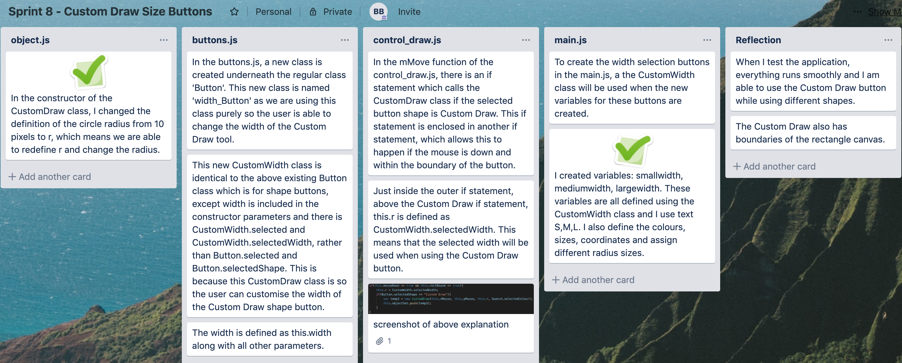

custom width buttons this is the eighth version of the application
Sprint 8
My aim for this sprint is to create buttons to change the width of the Custom Draw tool
My trello page:

My video testing:
This video shows all of the width buttons working according to their size.
They also work with their selected colours and within the rectangle canvas boundary only.